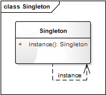

- 00 生活中的设计模式：启程之前，请不要错过我.md.html
- 01 监听模式：坑爹的热水器.md.html
- 02 适配模式：身高不够鞋来凑.md.html
- 03 状态模式：人与水的三态.md.html
- 04 单例模式：你是我生命的唯一.md.html
- 05 职责模式：我的假条去哪了.md.html
- 06 中介模式：找房子问中介.md.html
- 07 代理模式：帮我拿一下快递.md.html
- 08 装饰模式：你想怎么穿就怎么穿.md.html
- 09 工厂模式：你要拿铁还是摩卡.md.html
- 10 迭代模式：下一个就是你了.md.html
- 11 组合模式：自己组装电脑.md.html
- 12 构建模式：想要车还是庄园.md.html
- 13 克隆模式：给你一个分身术.md.html
- 14 策略模式：怎么来不重要，人到就行.md.html
- 15 命令模式：大闸蟹，走起！.md.html
- 16 备忘模式：好记性不如烂笔头.md.html
- 17 享元模式：颜料很贵必须充分利用.md.html
- 18 外观模式：学妹别慌，学长帮你.md.html
- 19 访问模式：一千个读者一千个哈姆雷特.md.html
- 20 生活中的设计模式：与经典设计模式的不解渊源.md.html
- 21 生活中的设计模式：那些未完待续的设计模式.md.html
- 22 深入解读过滤器模式：制作一杯鲜纯细腻的豆浆.md.html
- 23 深入解读对象池技术：共享让生活更便捷.md.html
- 24 深入解读回调机制：把你技能亮出来.md.html
- 25 谈谈我对设计模式的理解.md.html
- 26 谈谈我对设计原则的思考.md.html
- 27 谈谈我对项目重构的看法.md.html
- 捐赠
04 单例模式：你是我生命的唯一
【故事剧情】
爱情是每一个都渴望的，Tony 也是一样！自从毕业后，Tony 就一直没再谈过恋爱，离上一次的初恋也已经过去两年。一个巧合的机会，Tony 终于遇上了自己的喜欢的人，她叫 Jenny，有一头长发，天生爱笑、声音甜美、性格温和……
作为一个程序员的 Tony，直男癌的症状也很明显：天生木讷、不善言辞。Tony 自然不敢正面表白，但他也有自己的方式，以一种传统书信的方式，展开了一场暗流涌动的追求……经历了一次次屡战屡败，屡败屡战的追求之后，Tony 和 Jenny 终于在一起了！
然而好景不太长，由于种种的原因，最后 Jenny 还是和 Tony 分开了……
人生就像一种旅行，蜿蜒曲折，一路向前！沿途你会看到许多的风景，也会经历很多的黑夜，但我们无法回头！有一些风景可能很短暂，而有一些风景我们希望能够伴随自己走完余生。Tony 经历过一次被爱，也经历过一次追爱；他希望下次能找到一个可陪伴自己走完余生的她，也是他的唯一！

用程序来模拟生活
相信每一个人都渴望有一个纯洁的爱情，希望找到唯一的她。不管你是单身狗一个，还是已经成双成对，肯定都希望你的伴侣是唯一的！程序如人生，程序也一样，有一些类你希望它只有一个实例。
我们用程序来模拟一个真爱。
源码示例：
class MyBeautifulGril(object):
"""我的漂亮女神"""
__instance = None
__isFirstInit = False
def __new__(cls, name):
if not cls.__instance:
MyBeautifulGril.__instance = super().__new__(cls)
return cls.__instance
def __init__(self, name):
if not self.__isFirstInit:
self.__name = name
print("遇见" + name + "，我一见钟情！")
MyBeautifulGril.__isFirstInit = True
else:
print("遇见" + name + "，我置若罔闻！")
def showMyHeart(self):
print(self.__name + "就我心中的唯一！")
测试代码：
def TestLove():
jenny = MyBeautifulGril("Jenny")
jenny.showMyHeart()
kimi = MyBeautifulGril("Kimi")
kimi.showMyHeart()
print("id(jenny):", id(jenny), " id(kimi):", id(kimi))
输出结果：
遇见Jenny，我一见钟情！
Jenny就我心中的唯一！
遇见Kimi，我置若罔闻！
Jenny就我心中的唯一！
id(jenny): 47127888 id(kimi): 47127888
看到了没，一旦你初次选定了 Jenny，不管换几个女人，你心中念叨的还是 Jenny！这才是真爱啊！哈哈……
从剧情中思考单例模式
单例模式
Ensure a class has only one instance, and provide a global point of access to it.
确保一个类只有一个实例，并且提供一个访问它的全局方法。
设计思想
有一些人，你希望是唯一的，程序也一样，有一些类，你希望实例是唯一的。单例就是一个类只能有一个对象（实例），单例就是用来控制某些事物只允许有一个个体，比如在我们生活的世界中，有生命的星球只有一个——地球（至少到目前为止人类所发现的世界中是这样的）。
人如果脚踏两只船，你的生活将会翻船！程序中的部分关键类如果有多个实例，将容易使逻辑混乱，程序崩溃！
单例模式的模型抽象
代码框架
单例的实现方式有很多种，下面列出几种常见的方式。
1. 重写 new 和 init 方法
源码示例：
class Singleton1(object):
"""单例实现方式一"""
__instance = None
__isFirstInit = False
def __new__(cls, name):
if not cls.__instance:
Singleton1.__instance = super().__new__(cls)
return cls.__instance
def __init__(self, name):
if not self.__isFirstInit:
self.__name = name
Singleton1.__isFirstInit = True
def getName(self):
return self.__name
# Test
tony = Singleton1("Tony")
karry = Singleton1("Karry")
print(tony.getName(), karry.getName())
print("id(tony):", id(tony), "id(karry):", id(karry))
print("tony == karry:", tony == karry)
输出结果：
Tony Tony
id(tony): 46050320 id(karry): 46050320
tony == karry: True
在 Python 3 的类中，*new* 负责对象的创建，而 *init* 负责对象的初始化；*new* 是一个类方法，而 *init* 是一个对象方法。
*new* 是我们通过类名进行实例化对象时自动调用的，*init* 是在每一次实例化对象之后调用的，*new* 方法创建一个实例之后返回这个实例对象，并将其传递给 *init* 方法的 self 参数。
在上面的示例代码中，我们定义了一个静态的 *instance* 类变量，用来存放 Singleton1 的对象，*new* 方法每次返回同一个*instance对象*（若未初始化，则进行初始化）。因为每一次通过 s = Singleton1() 的方式创建对象时，都会自动调用 *init* 方法来初始化实例对象；因此 *isFirstInit* 的作用就是确保只对 *instance* 对象进行一次初始化，故事剧情中的代码就是用这种方式实现的单例。
在 Java 和 C++ 这种静态语言中，实现单例模式的一个最简单的方法就是：将构造函数声明成 private，再定义一个 getInstance() 的静态方法返回一个对象，并确保 getInstance() 每次返回同一个对象即可，如下面的 Java 示例代码。
/**
* Java中单例模式的实现，未考虑线程安全
*/
public class Singleton {
private static Singleton instance = null;
private String name;
private Singleton(String name) {
this.name = name;
}
public static Singleton getInstance(String name) {
if (instance == null) {
instance = new Singleton(name);
}
return instance;
}
}
Python 中 *new* 和 *init* 都是 public 的，所以我们需要通过重写 *new* 和 *init* 方法来改造对象的创建过来，从而实现单例模式。如果你要更详细地了解 Python 中 *new* 和 *init* 的原理和用法，请参见《深入理解 Python 中的 new 和 init》。
2. 自定义 metaclass 的方法
class Singleton2(type):
"""单例实现方式二"""
def __init__(cls, what, bases=None, dict=None):
super().__init__(what, bases, dict)
cls._instance = None # 初始化全局变量cls._instance为None
def __call__(cls, *args, **kwargs):
# 控制对象的创建过程，如果cls._instance为None则创建，否则直接返回
if cls._instance is None:
cls._instance = super().__call__(*args, **kwargs)
return cls._instance
class CustomClass(metaclass=Singleton2):
"""用户自定义的类"""
def __init__(self, name):
self.__name = name
def getName(self):
return self.__name
tony = CustomClass("Tony")
karry = CustomClass("Karry")
print(tony.getName(), karry.getName())
print("id(tony):", id(tony), "id(karry):", id(karry))
print("tony == karry:", tony == karry)
输出结果：
Tony Tony
id(tony): 50794608 id(karry): 50794608
tony == karry: True
在上面的代码中，我们定义了一个 metaclass（Singleton2）来控制对象的实例化过程。在定义自己的类时，我们通过 class CustomClass(metaclass=Singleton2) 来显示地指定 metaclass 为 Singleton2。如果你还不太熟悉 metaclass，想了解更多关于它的原理，请参见《[附录 Python 中 metaclass 的原理](》。
3. 装饰器的方法
def singletonDecorator(cls, *args, **kwargs):
"""定义一个单例装饰器"""
instance = {}
def wrapperSingleton(*args, **kwargs):
if cls not in instance:
instance[cls] = cls(*args, **kwargs)
return instance[cls]
return wrapperSingleton
@singletonDecorator
class Singleton3:
"""使用单例装饰器修饰一个类"""
def __init__(self, name):
self.__name = name
def getName(self):
return self.__name
tony = Singleton3("Tony")
karry = Singleton3("Karry")
print(tony.getName(), karry.getName())
print("id(tony):", id(tony), "id(karry):", id(karry))
print("tony == karry:", tony == karry)
输出结果：
Tony Tony
id(tony): 46206704 id(karry): 46206704
tony == karry: True
装饰器的实质就是对传进来的参数进行补充，可以在原有的类不做任何代码变动的前提下增加额外的功能，使用装饰器可以装饰多个类。用装饰器的方式来实现单例模式，通用性非常好，在实际项目中用的非常多。
类图
上面的代码框架可用类图表示如下：

基于框架的实现
通过上面的方式三，我们知道，定义通用的装饰器方法之后再用它去修饰一个类，这个类就成了一个单例类，使用起来非常方便。最开始的示例代码我们假设它为 version 1.0，那么再看看基于装饰器的 version 2.0 吧。
@singletonDecorator
class MyBeautifulGril(object):
"""我的漂亮女神"""
def __init__(self, name):
self.__name = name
if self.__name == name:
print("遇见" + name + "，我一见钟情！")
else:
print("遇见" + name + "，我置若罔闻！")
def showMyHeart(self):
print(self.__name + "就我心中的唯一！")
输出结果：
遇见Jenny，我一见钟情！
Jenny就我心中的唯一！
Jenny就我心中的唯一！
id(jenny): 58920752 id(kimi): 58920752
应用场景
- 你希望这个类只有一个且只能有一个实例；
- 项目中的一些全局管理类（Manager）可以用单例来实现。
© 2019 - 2023 Liangliang Lee. Powered by gin and hexo-theme-book.